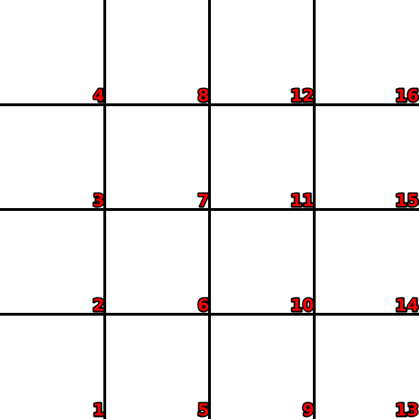
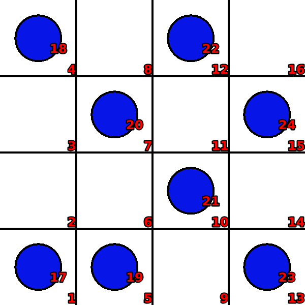
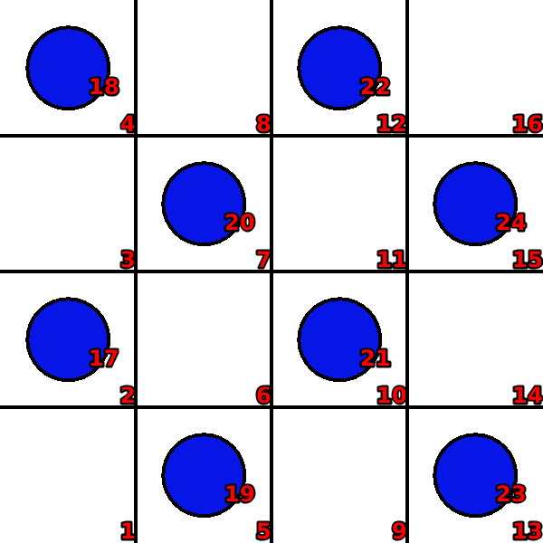

N-knights
Language: Teaching Script Entire Dialog
World states:
init-nknights2.world
fail-nknights2.world
final-nknights2.world
Primitive concepts used
Object types:
|
locations, blocks |
Colors:
|
red, blue
|
| Spatial relations: |
on, below, between |
| Functions: |
count of, less than |
Teaching Dialog (Rosie in bold)
TEACHER: The name of the puzzle is n-knights.
Please setup the puzzle.
TEACHER: Load init-nknights2.

Ok.
TEACHER: Ok.
Please describe the actions, goals, and failure conditions.
TEACHER: The name of an action is place-block.
What are the conditions of the action.
TEACHER: You can move a clear available block onto a clear location.
Please describe the meaning of 'available' in this context.
TEACHER: If a block is not on a location then it is available.
Ok, I've learned the meaning of 'available' for this context.
Please describe the meaning of 'clear' in this context.
TEACHER: If a location is not below an object then it is clear.
Ok, I've learned the meaning of 'clear' for this context.
I've learned the action.
TEACHER: The solution has eight steps.
Ok.
TEACHER: Load fail-nknights2.

Ok.
TEACHER: If a block is jumpable by another block then you lose.
Please setup the failure condition.
TEACHER: Ok.
Please describe the meaning of 'jumpable-by' in this context.
TEACHER: If an object that is alongside a block is diagonal with a location that is not next to the block then the location is jumpable by the block.
Ok, I've learned the meaning of 'jumpable-by' for this context.
I've learned the failure condition.
TEACHER: Load final-nknights2.

Ok.
TEACHER: The name of the goal is all-placed.
Please setup the goal state.
TEACHER: Ok.
Please describe the goal.
TEACHER: The goal is that all blocks are placed.
Please describe the meaning of 'placed' in this context.
TEACHER: If a block is on a location then the block is placed.
Ok, I've learned the meaning of 'placed' for this context.
I've learned the goal.
TEACHER: Done.
I've learned n-knights. Should I try to solve the puzzle?
TEACHER: No.
Ok.